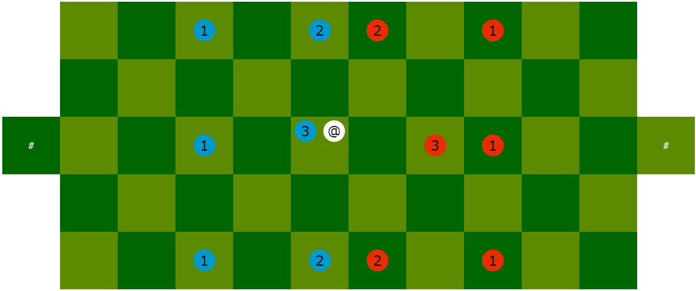

Le matériel
Objectif du jeu
Mise en place
Tour de jeu
Le matériel
Voici le matériel, illustré sur le schéma ci-dessus :
- 1 balle blanche, avec l'étiquette "@".
- Une équipe de 6 footballeurs bleus.
- Une équipe 6 footballeurs rouges.
- Chaque équipe se compose de :
- 1 avant-centre de force 3.
- 2 ailiers de force 2.
- 3 arrières de force 1.
- Le terrain est construit à l'aide de 52 cases vertes.
- La case "a3", avec une étiquette "#", est le but défendu par l'équipe bleue.
- La case "l3", avec une étiquette "#", est le but défendu par l'équipe rouge.
Les coordonnées ainsi que les étiquettes "@" et "#" sont utilisées pour la notation des coups.
Objectif du jeu
- Baltek se joue à deux joueurs.
- Chaque joueur dirige une équipe de 6 footballeurs.
- Les joueurs décident de l’attribution des équipes.
- À son tour de jeu, chaque joueur déplace la balle et ses footballeurs,
en cherchant à envoyer la balle dans le but adverse.
- Le gagnant est le joueur qui atteint en premier le score de 2 buts.
Mise en place
- En début de partie, ainsi qu'après chaque but marqué, les footballeurs sont placés
sur le terrain à leurs positions d’engagement.
- Les positions d’engagement sont fixes.
- Les positions d’engagement des deux équipes sont symétriques,
sauf celles des avant-centres.
- L'équipe bleue effectue toujours le premier engagement de la partie.
- L'équipe qui vient de marquer un but laisse l'autre équipe engager.
- La figure suivante représente l’engagement par l’équipe bleue.

- La figure suivante représente l’engagement par l’équipe rouge.
Tour de jeu
Les actions, options, compensations, crédits et bonus
- À son tour de jeu, chaque joueur choisit des actions et options,
qui, selon le contexte, exigent des compensations.
- Ces choix coûtent des crédits ou bonus.
- Chaque joueur dispose de :
- 3 crédits, au début de chaque tour ;
- 1 bonus, au début de chaque engagement.
- À son tour de jeu, chaque joueur peut dépenser 0, 1, 2 ou 3 crédits,
et 0 ou 1 bonus.
- Les actions, options et compensations sont les suivantes :
- Courir : déplacer un footballeur ;
coût : 1 crédit.
- Sprint : option pour augmenter le déplacement d'un footballeur ;
coût : 1 bonus.
- Passer/tirer : déplacer la balle ;
coût : 1 crédit.
- Duel : compensation de force pour posséder la balle ;
coût : 1 crédit par unité de force.
- Lob : compensation de force pour déplacer la balle ;
coût : 1 crédit par unité de force.
Action « courir »
- L’action « courir » coûte 1 crédit et permet de déplacer un footballeur de 1 case.
- Chacune des cases du carré 3 x 3, centré sur le footballeur déplacé,
sont des destinations possibles, sauf si :
- celle-ci est en dehors du terrain ;
- celle-ci est une case de but ;
- celle-ci accueille déjà un footballeur de la même équipe.
- Un footballeur ne peut pas « courir » plus de une fois par tour.
- L’action « courir » ne déplace pas la balle.
Exemple : avec des bordures jaunes, les destinations possibles pour le footballeur bleu "3".
Option « sprint »
- L'option « sprint » coûte 1 bonus et étend à 2 cases le déplacement d'un footballeur.
- L'option « sprint » doit toujours être combinée à l'action « courir ».
- Chacune des cases du carré 5 x 5, centré sur le footballeur déplacé,
sont des destinations possibles, sauf si :
- celle-ci est en dehors du terrain ;
- celle-ci est une case de but ;
- celle-ci accueille déjà un footballeur de la même équipe.
- Le joueur ne peut dépenser son bonus qu'une seule fois entre deux engagements.
Exemple : avec des bordures jaunes, les destinations possibles pour le footballeur bleu "3".
Action « passer/tirer »
- Les actions « passer à un footballeur » et « tirer au but » obéissent aux mêmes règles.
- L’action « passer/tirer » coûte 1 crédit et permet, si les conditions sont satisfaites,
de déplacer la balle de 1 ou 2 cases en horizontal, vertical ou diagonal,
mais sans courber sa trajectoire.
- La case d’arrivée de la balle doit être sur le terrain.
- La case d’arrivée de la balle peut être vide ou occupée.
- Un footballeur ne peut « passer/tirer » plus de une fois par tour.
- Voici les conditions à satisfaire :
- Un footballeur du joueur doit occuper la même case que la balle.
Appelons-le « passeur/tireur ».
- Si le « passeur/tireur » partage sa case avec un adversaire,
alors le « passeur/tireur » doit :
- soit égaler ou surpasser la force de son adversaire,
- soit compenser son déficit de force par un « duel ».
- Si le « passeur/tireur » déplace la balle par-dessus un adversaire,
alors le « passeur/tireur » doit :
- soit égaler ou surpasser la force de son adversaire,
- soit compenser son déficit de force par un « lob ».
Exemple : avec des bordures jaunes, les destinations possibles pour la balle
par le footballeur bleu "3" ; aucune n'exige duel ou lob.
Compensation « duel »
- Cette compensation peut être exigée par l’action « tirer/passer ».
- Le « duel » compense le déficit de force du « passeur/tireur »
vis-à-vis de l’adversaire qui partage sa case.
- Le « duel » coûte 1 crédit par unité de force compensée.
Exemples : pour posséder la balle, le footballeur bleu "2" doit livrer 1 duel ;
et footballeur bleu "1" doit livrer 2 duels.
Compensation « lob »
- Cette compensation peut être exigée par l’action « tirer/passer ».
- Le « lob » compense le déficit de force
du « passeur/tireur » vis-à-vis de l’adversaire par-dessus lequel passe la balle.
- Le « lob » coûte 1 crédit par unité de force compensée.
- La compensation de lob n'est pas nécessaire pour passer par-dessus
un footballeur de son équipe.
Exemples : pour transmettre la balle au footballeur beu "2", le footballeur bleu "1"
doit effectuer 1 lob, dans le contexte de gauche,
et 2 lobs dans le contexte de droite.